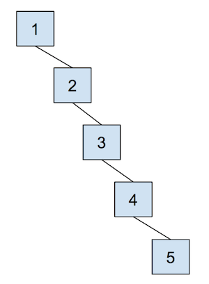
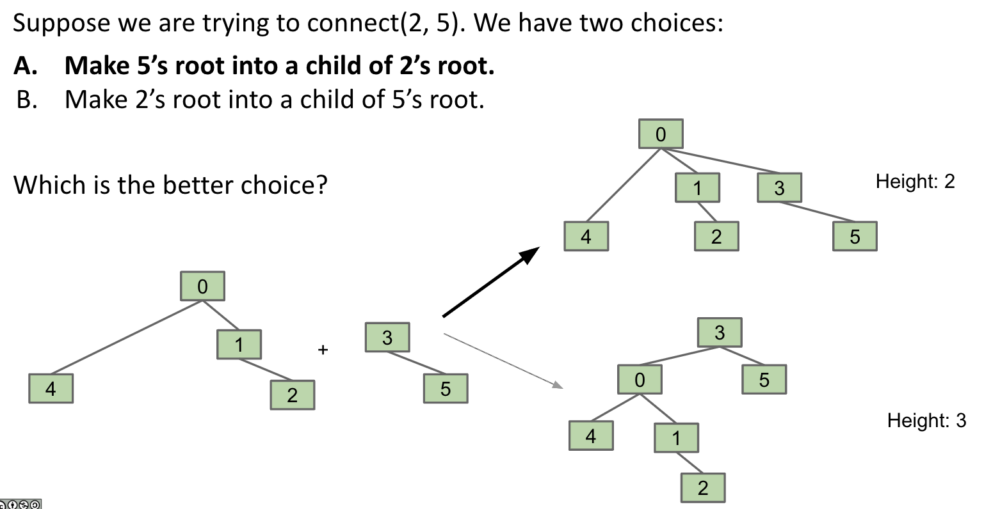
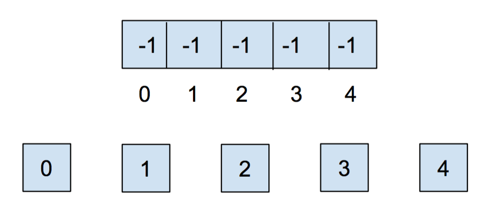
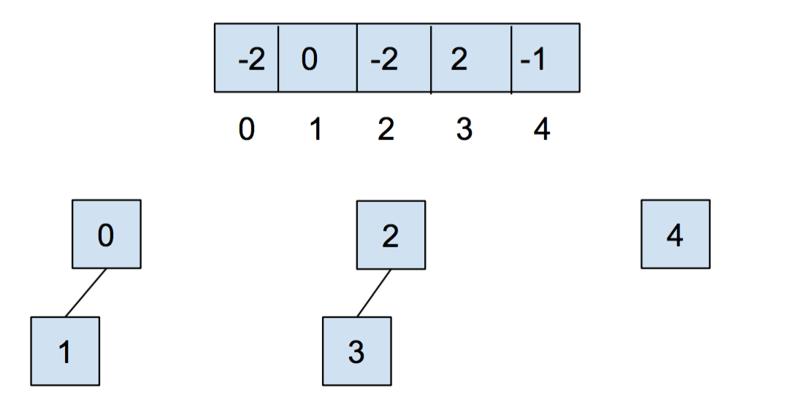
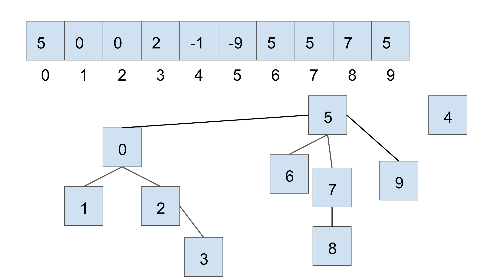
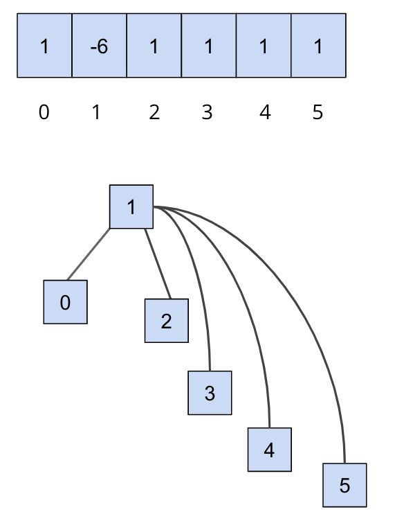

实验05：不相交集
常见问题页面
请使用我们的 常见问题和常见问题页面 作为资源。我们将在本周内持续更新网站上的这个常见问题页面！
简介
今天，我们将深入学习不相交集。我们 强烈建议 你在开始本实验之前先观看不相交集的课程视频，因为它会涵盖你开始学习所需的知识。
对于本周的实验，我们将实现我们自己的不相交集，
UnionFind
。更具体地说，我们将实现加权快速合并 + 路径压缩。
虽然我们会简要介绍所需的概念，但请参考讲座获取更多信息。
像往常一样，从骨架仓库中拉取文件：
git pull skeleton main
不相交集
作为回顾，让我们介绍一下什么是不相交集。 不相交集数据结构 表示一组集合，这些集合是不相交的，意味着该数据结构中的任何项最多只在一个集合中找到。
对于不相交集，我们通常将自己限制在两个主要操作上：
union
和
find
。
union
操作会将两个集合合并为一个集合。
find
操作会接受一个项，并告诉我们该项属于哪个集合。通过这些操作，我们能够轻松检查两个项是否相互连接。
快速合并
正如课程中介绍的，我们讨论了快速合并。通过这种表示方式，我们可以将不相交集数据结构看作一棵树。具体来说，这棵树具有以下特性：
- 节点是我们集合中的元素，
- 每个节点只需要引用其父节点，而不是直接引用集合的代表，以及
- 每棵树的顶部（我们称之为树的"根"）将是它所代表的集合的代表。
然而，这种方法的问题之一是
union
的最坏情况运行时间可能是线性的，具体取决于元素的连接方式。换句话说，树可能会变得非常高，导致
union
的性能很差。例如，看看下面的例子——为什么这会导致最坏情况的运行时间？

现在，让我们用以下优化来解决这个数据结构的缺点。
加权快速合并
我们将对快速合并数据结构进行的第一个优化称为"按大小合并"。这样做是为了保持树尽可能浅，避免导致最坏情况运行时间的细长树。当我们
union
两棵树时，我们将较小的树（节点较少的树）作为较大树的子树，平局时任意选择。我们称之为
加权快速合并
。
因为我们现在使用"按大小合并"，任何元素的最大深度将是 \(O(\log N)\)，其中 \(N\) 是数据结构中存储的元素数量。与未优化的快速合并的线性时间运行时间相比，这是一个巨大的改进。关于这个深度的一些直观理解是，任何元素 \(x\) 的深度只有在包含 \(x\) 的树 \(T_1\) 被放置在另一棵树 \(T_2\) 下面时才会增加。当这种情况发生时，结果树的大小将至少是 \(T_1\) 大小的两倍，因为 \(size(T_2) \ge size(T_1)\)。只包含 \(x\) 的树最多可以将其大小翻倍 \(\log N\) 次，直到我们达到总共 \(N\) 个元素。
请参阅以下可视化内容以了解其工作原理：

示例
此示例中的平局打破方案是最小元素成为根——请注意，根据实现的不同，情况并非总是如此。
让我们看一个加权快速合并的示例。当我们最初创建不相交集时，每个元素都在自己的集合中，所以我们将数组中的所有元素初始化为
-1
。对于这种表示方式，我们希望在数组中跟踪大小，因此我们
将集合的权重以负值（-weight）存储在其根节点处
（同时也用于区分父节点和集合的权重）。

在我们调用
union(0,1)
和
union(2,3)
之后，我们的数组和抽象表示将如下所示

请注意，上面存储在 0 和 2 处的值是 -2，因为各个集合的根节点存储着它们的（负）大小。现在让我们调用
union(0,2)
。它会看起来像这样：

为了举例说明，假设我们有另一个不相交集，当前状态如下所示（我们使用与上面相同的平局打破方案）：

如果我们要通过
union(7, 2)
连接两个较大的集合，我们会得到以下结果：

在这种情况下，我们连接 7 和 2 分别所属的集合的根节点，较小集合的根节点成为较大集合的根节点的子节点。使用加权快速合并，我们更新数组中的两个值：
- 较小根节点的父节点变为较大集合的根节点
- 较大根节点的值相应地更新为新的大小
路径压缩
尽管我们通过使用加权快速合并数据结构提高了速度，但我们还可以进行另一项优化！如果我们有一棵很高的树，并且在最深的叶子节点上重复调用
find
，会发生什么？每次我们都必须从叶子节点遍历到根节点。
一个巧妙的优化是将叶子节点向上移动，使其成为根节点的直接子节点。这样，下次你在该叶子节点上调用
find
时，运行速度会快得多。一个更巧妙的想法是，我们可以对从叶子节点到根节点路径上的
每个
节点做同样的事情。具体来说，当我们对一个元素调用
find
时，所有向上遍历树（到根节点）时经过的节点都会更新，使它们现在直接连接到根节点。这种优化称为
路径压缩
。一旦你找到一个元素，路径压缩将使未来查找它（以及路径上到根节点的所有节点）变得更快。
\(f\) 次
find
和 \(u\) 次
union
操作的任意组合的运行时间为 \(\Theta(u + f \alpha(f+u,u))\)，其中 \(\alpha\) 是一个增长
极其
缓慢的函数，称为
阿克曼反函数
。所谓"增长极其缓慢"，是指它增长得如此之慢，以至于对于你将使用的任何实际输入，阿克曼反函数永远不会大于 4。这意味着出于任何实际目的，具有路径压缩的加权快速合并数据结构的
find
操作平均只需要常数时间！
需要注意的是，尽管对于所有实际大小的输入，这个操作可以被认为是常数时间，但我们不应该将整个数据结构描述为常数时间。我们可以这样说：对于所有小于某个极大大小的输入，它将是常数的。没有这个限定条件，我们仍然应该使用阿克曼反函数来描述它。
下面显示了一个示例，我们从以下内容开始
这只是一个演示路径压缩作用的示例。 请注意，你无法通过加权快速合并得到这种结构（正下方的第一张图）。

在我们调用
find(5)
之后，我们遍历到根节点时经过的所有节点都会更新，使它们现在直接连接到根节点：

你可以访问这个 链接 来体验不相交集。
练习：
UnionFind
对于
UnionFind
，你将实现一个
带路径压缩的加权快速合并
。
现在我们将实现我们自己的不相交集数据结构，
UnionFind
。此时，如果你还没有看过
UnionFind.java
文件，请查看一下。在这个文件中，你会看到我们已经为你提供了一些框架代码——你需要填写以下方法的实现：
-
UnionFind(int N)：这是构造函数。它创建一个包含 N 个元素的UnionFind数据结构。 -
int sizeOf(int v)：返回v所属集合的大小。 -
int parent(int v)：返回 v 的父节点。 -
boolean connected(int v1, int v2)：如果两个顶点相连则返回true。 -
int find(int v)：返回v所属集合的根节点。 -
void union(int v1, int v2)：将v1和v2连接在一起。
我们建议你先实现构造函数，并在实现其他方法之前先看看
find
。
完成
UnionFind
中的方法。
你需要在
union
中使用
find
。
实验笔记
请注意，在本实验中，我们将使用非负整数作为不相交集中的元素。
每个方法都提供了注释，并且比上面的摘要更详细一些，所以请务必仔细阅读这些注释，以了解你需要实现什么。记住要实现上面讨论的两种优化，并注意一些方法的注释中描述的 平局打破方案 。
在本实验中，你需要实现以下平局打破方案：如果集合的大小相等，
通过将
v1
的根连接到
v2
的根来打破平局。
你还应该正确处理错误输入，例如，如果将无效顶点传递给函数，则抛出
IllegalArgumentException
。你可以使用以下代码行抛出
IllegalArgumentException
：
throw new IllegalArgumentException("Some comment to describe the reason for throwing.");
测试
在本实验中，我们提供了一些测试来检查你的实现，但它们 并不全面。 自动评分器上的 6 个测试中只有 4 个在本地提供。通过本地测试并不意味着你会通过 Gradescope 上的测试，你需要编写自己的测试来验证正确性。
如果你发现最后两个测试失败了，请确保你正确实现了路径压缩，并且你已经测试了所实现的 所有方法 的正确性。
提交
就像你之前的作业一样，添加、提交，然后将你的实验 05 代码推送到 GitHub。然后，提交到 Gradescope。
-
完成
UnionFind.java的实现。这个实验总共5分。